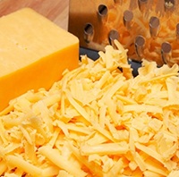
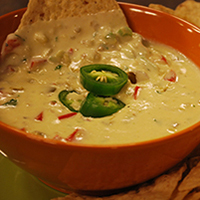
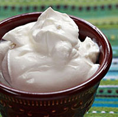

Cheddar, a popular variety of cheese, is one of the most common ingredients of many burritos.
It is often itself referred to as "Nacho cheese" when melted down and served as a topping to corn tortilla chips.
On the ideal burrito, the cheese can either be shredded and scattered amongst the meat or melted in the selected ingredients when cooked.
It is often itself referred to as "Nacho cheese" when melted down and served as a topping to corn tortilla chips.
On the ideal burrito, the cheese can either be shredded and scattered amongst the meat or melted in the selected ingredients when cooked.
While not as marketed and promoted as much as other ethnic sauces, the Queso dip is a unique blend of melted cheese with other foods.
Typically, a select few vegetables are chopped up and mixed in with the cheese to give the extra flavor to the sauce.
Peppers, Cucumbers, or even salsa mixes are often added to spruce up the queso's taste.
Typically, a select few vegetables are chopped up and mixed in with the cheese to give the extra flavor to the sauce.
Peppers, Cucumbers, or even salsa mixes are often added to spruce up the queso's taste.


Sour cream is another favored topping for numerous dishes, burritos included.
Starting out as plain cream, it gains its tangy taste from souring with additional lactic acid.
Often it can be applied in scoops to the burrito to be spread as the consumer desires.
Starting out as plain cream, it gains its tangy taste from souring with additional lactic acid.
Often it can be applied in scoops to the burrito to be spread as the consumer desires.